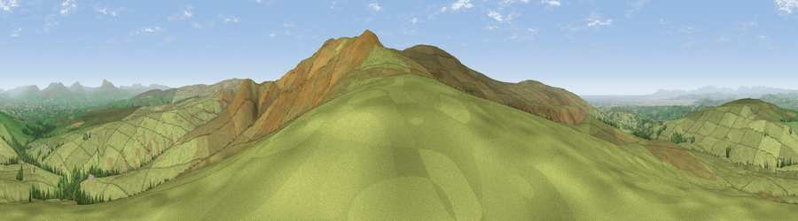

Viewpoint c9221_7191
#3387 in England · top 8% of its area beats it · —Where it is
The exact computed spot (SD 59550 61112). Click the marker for map links.
The view, rendered

A 360° render of this exact spot computed from the terrain model, tree cover and land cover — summer colours, afternoon light, calibrated against photographs of famous viewpoints. Real trees, hedges and buildings will differ in detail.
The panorama
Grey silhouette: terrain skyline in each direction (720 bearings, Earth curvature and refraction included). Dashed green: skyline with trees (+15 m) and buildings (+8 m) as obstacles. Blue strip: how far the ground is visible on each bearing.
Where the view opens
Wedge length = distance to the farthest visible ground on that bearing (vegetation-aware). Rings at 10, 25 and 50 km.
What fills the view
94% grassland · 4% woodland · 1% water
Angular shares of the visible panorama (visual magnitude), not map area. Landscape diversity 0.12 (0–1 Shannon).
Key numbers
More beautiful places nearby
The staircase of upgrades: each row has a higher view potential than everything closer. Driving times are estimates from straight-line distance, calibrated against real road routing — check an actual route before setting out.
| Place | Direction | Drive | Score |
|---|---|---|---|
| Viewpoint c9201_7202 | SSE · 1 km | ~3 min | 76.1 |
| Viewpoint c9170_7172 | SSW · 3 km | ~7 min | 77.0 |
| Grit Fell | WSW · 5 km | ~10 min | 77.3 |
| Viewpoint near Quernmore | WSW · 5 km | ~12 min | 78.0 |
| Viewpoint near Scorton | SSW · 15 km | ~26 min | 79.9 |
| Warton Crag | NW · 16 km | ~28 min | 83.2 |
| Viewpoint near Grange-over-Sands | NW · 26 km | ~42 min | 83.4 |
| Viewpoint near Cartmel | NW · 30 km | ~47 min | 87.0 |
54.04439, -2.61922 · source: screening · position refined by local search. Computed location — check access rights before visiting.